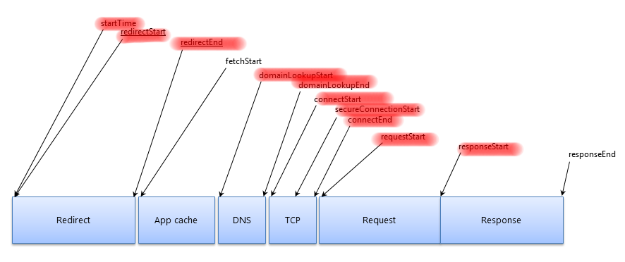

Testing
www.test.com
Third-Party Content
The weak link in your chain?
Other metaphors...
- Parasites
- Those stocks...
- That person at all the parties...
I've given talks about third-party content for five years,
and I'm afraid to say...
we seem to have less control than ever
Risk!
Malicious code injection 🙈
Availability 📉
SPOFs are rare (hopefully!)
What's their DR?
Are they using a CDN?
Is it as good as yours?
What is their SLA for availability?
Is it as good as yours?
Code Quality 🔎
Different release schedules
Polluting the global scope
Spamming the console log
Just plain thoughtless
Performance 🚀
We can't trust them to self-police
... the X Web Reference Snippet was available ... and the download time over HTTP did not exceed 500 ms.
Snippet is sampled every minute from a variety of U.S. locations.
status.optimizely.com
Resource Timing to the rescue!

https://www.w3.org/TR/resource-timing-1/
Resource Timing to the rescue?
Not without Timing-Allow-Origin 🙈
https://www.w3.org/TR/resource-timing-1/
We have little or no control over which are used
Share data with other teams!
Thank you, and good luck!
Simon Hearne
webperf.ninja/tools
simonhearne.github.io/weak-links
I've given talks about third-parties for five years.
They're here to stay...
& we have increasingly limited control over them
The money
“We know that Optimizely slows down the site, but it will get us $750k increased revenue this year”
The it's not my job
“We suspect it might slow the site down, we haven’t tested it. Marketing says it’s critical to their latest TV campaign so there’s no point arguing”
The tag manager
“They've got access to the tag manager, head for cover!”
Medium clicks-and-mortar store, UK
Some assumptions...
- We aren't in (commercial) control
- We care about site speed
- test
@SimonHearne